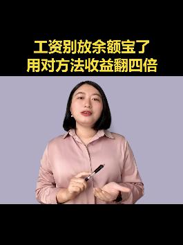
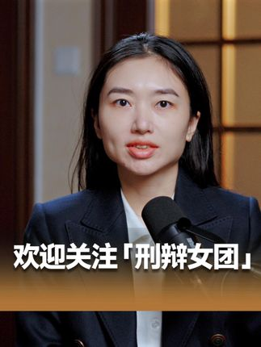
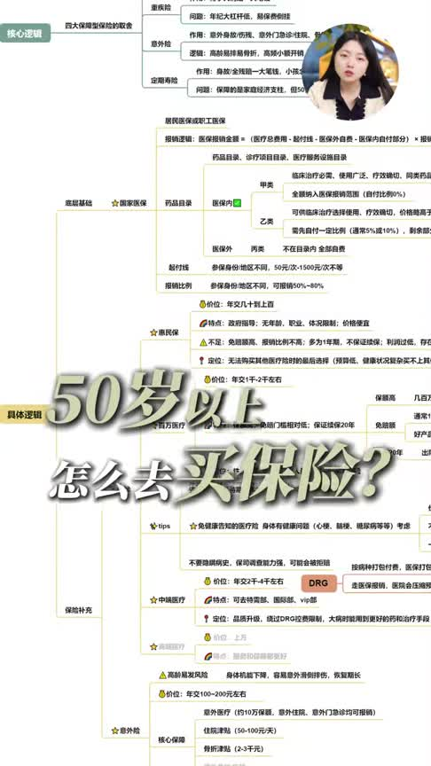
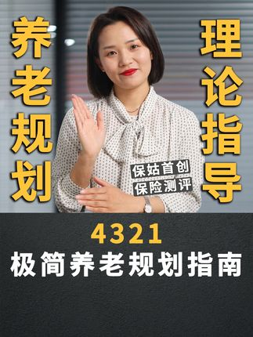
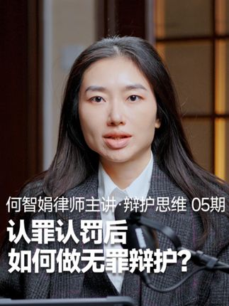
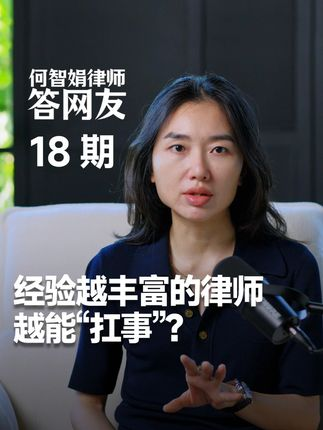

保险个人IP
≥30万
现有32个保险个人IP样本的中位数为18.9万，前25%分界约49.8万。30万高于行业样本中位，仍保留足够的成熟账号供视觉筛选；50万以上单列为核心头部。
DAILY VISUAL MONITOR / DAY 01
53条跨行业搜索样本经过视觉盲筛、粉丝量门槛、主页稳定性与动态画面四轮核验。最接近标杆的是何智娟律师，但横屏画面在竖屏播放中的利用率不足，最终停在83分。
粉丝量不代替审美评分，但可以排除尚未形成规模化运营方法的小账号。保险与其他专业赛道的受众上限不同，因此使用两条门槛。
现有32个保险个人IP样本的中位数为18.9万，前25%分界约49.8万。30万高于行业样本中位，仍保留足够的成熟账号供视觉筛选；50万以上单列为核心头部。
律师、医生、财经等赛道受众更广、成熟供给更多。50万作为正式对标起点，100万以上视为跨行业核心头部；30–50万只进入观察区。
这不是“九种好模板”，而是市场现状地图。先看母版结构，再看灯光、颜色和字幕这些表层皮肤。

纯色墙、书墙或统一布景，人物正面半身。稳定高产，但很容易平、硬、像流水线。
高频出现办公桌、会客区、书房或专业座椅作为身份线索，适合建立顾问感与资源感。
高频出现
三分之二侧身、桌面麦克风、双机位或访谈关系。画面层次更好，但要处理横竖屏适配。
常见且增长
人物搭配白板、大屏、平板或桌面资料，视觉重点是“人在解释”，而非纯图卡。
常见真人与保单、报告、数据表或新闻截图交替。信息密度高，但人物容易被资料吞没。
常见办公、见客、出差、活动、演讲等行动镜头组成，最能建立真实经历与规模感。
中频，高价值家、咖啡厅、汽车、酒店或户外，让从业者从“讲知识的人”变成可感知的人。
中频情景对话、客户案例还原、一人分饰多角或轻剧情，变化丰富但稳定母版更难。
低频
市场上不少，但更多是生产方式而非好版面。除非完成度很高，否则不进入视觉标杆库。
常见，不优先搜索结果只用于发现候选，真正的判断发生在主页与实际视频里。
| 账号 | 粉丝 | 视觉分 | 主页判断 | 结论 |
|---|---|---|---|---|
| 何智娟律师 | 112.1万 | 83 | 暖木访谈母版重复，动态稳定；横屏在竖屏中的有效面积不足 | 近线观察 |
| 林清浅律师 | 128.6万 | 79 | 同一母版高频复现，但磨皮明显、人物与背景层次偏平 | 不入库 |
| 斯黛拉律师 | 65.1万 | 72 | 访谈、自拍、活动和剧集海报混杂，缺少稳定的主页视觉系统 | 不入库 |
| 程律来了 | 71.9万 | 61 | 手机近距离自拍为主，场景证据、景深和稳定光线不足 | 不入库 |
| 南京李莹律师 | 0.55万 | 未评 | 搜索帧不错，但未达到跨行业粉丝门槛 | 门槛淘汰 |
| 璐璐有为 / 保险经纪Sherry姐 | 0.12万 / 141 | 未评 | 未达到保险个人IP 30万粉丝门槛 | 门槛淘汰 |
她不是“拍得不好”，而是尚未形成一套充分利用抖音竖屏空间的高完成度母版。
暖木屏风、桌面麦克风与深色服装共同建立专业判断感，人物手势和曝光在长视频中保持稳定。


这里不评价账号内容能力，只说明为什么它们不能成为本次“好版面”的视觉标杆。
稳定性很强，但稳定的是“重磨皮近景+虚化背景”。肤色与面部质感不够真实，画面层次单一。
个别办公室与演讲镜头有质感，但主页混入自拍、海报和情景素材，无法提炼成稳定母版。
画面依赖手机自拍近景，人物占比过大、镜头距离过近，场景无法为职业身份作证。
固定棚拍和近景口播仍是绝对主流；真正稀缺的不是“布置一个好看的房间”，而是能让人物身份、动作、场景和平台比例共同成立的长期母版。
优先寻找30万粉丝以上的保险个人IP，以及50万以上、采用办公室顾问、竖版播客、商务纪录片和生活场景口播的跨行业账号。没有达到85分，继续保持零新增。